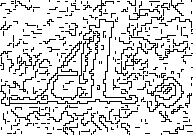
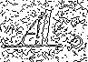

Edge
Last modified: May 17, 2022
Contents
canny_edge_image
Image [GreyScale|Grey16|Float] canny_edge_image (float(0.00, 1000000000000000052504760255204420248704468581108159154915854115511802457988908195786371375080447864043704443832883878176942523235360430575644792184786706982848387200926575803737830233794788090059368953234970799945081119038967640880074652742780142494579258788820056842838115669472196386865459400540160.00) scale = 0.80, float(0.00, 1000000000000000052504760255204420248704468581108159154915854115511802457988908195786371375080447864043704443832883878176942523235360430575644792184786706982848387200926575803737830233794788090059368953234970799945081119038967640880074652742780142494579258788820056842838115669472196386865459400540160.00) gradient_threshold = 4.00)
| Operates on: | Image [GreyScale|Grey16|Float] |
|---|---|
| Returns: | Image [GreyScale|Grey16|Float] |
| Category: | Edge |
| Defined in: | edgedetect.py |
| Author: | Ullrich Köthe (wrapped by Robert Ferguson) |
EXPERIMENTAL
Detect and mark edges in an edge image using Canny's algorithm.
Uses code from the VIGRA Computer Vision Library (Copyright 1998-2007 by Ullrich Köthe).
- scale
- The scale relates to the value b of the exponential filter.
- gradient_threshold
- This operator first calls cannyEdgelList() to generate an edgel list for the given image. Than it scans this list and selects edgels whose strength is above the given gradient_threshold.
Example 1: canny_edge_image()

difference_of_exponential_crack_edge_image
Image [GreyScale|Grey16|Float] difference_of_exponential_crack_edge_image (float(0.00, 1000000000000000052504760255204420248704468581108159154915854115511802457988908195786371375080447864043704443832883878176942523235360430575644792184786706982848387200926575803737830233794788090059368953234970799945081119038967640880074652742780142494579258788820056842838115669472196386865459400540160.00) scale = 0.80, float(0.00, 1000000000000000052504760255204420248704468581108159154915854115511802457988908195786371375080447864043704443832883878176942523235360430575644792184786706982848387200926575803737830233794788090059368953234970799945081119038967640880074652742780142494579258788820056842838115669472196386865459400540160.00) gradient_threshold = 4.00, int(0, 32000) min_edge_length = 0, bool close_gaps = False, bool beautify = False)
| Operates on: | Image [GreyScale|Grey16|Float] |
|---|---|
| Returns: | Image [GreyScale|Grey16|Float] |
| Category: | Edge |
| Defined in: | edgedetect.py |
| Author: | Ullrich Köthe (wrapped by Robert Ferguson) |
EXPERIMENTAL
Detect and mark edges in a crack edge image using the Shen/Castan zero-crossing detector.
Uses code from the VIGRA Computer Vision Library (Copyright 1998-2007 by Ullrich Köthe).
- scale
- The scale relates to the value b of the exponential filter.
- gradient_threshold
- Whenever the gradient at a zero crossing is greater than the given gradient threshold, an edge point is marked in the destination image on the darker side of the zero crossing (the zero crossing occurs between pixels).
- min_edge_length
- Removes all edges shorter than the number of pixels specified (0 retains all edges). Values near 10 are suggested.
- close_gaps
- Close one pixel wide gaps.
- beautify
- See the VIGRA Docs.
Example 1: difference_of_exponential_crack_edge_image()

difference_of_exponential_edge_image
Image [GreyScale|Grey16|Float] difference_of_exponential_edge_image (float(0.00, 1000000000000000052504760255204420248704468581108159154915854115511802457988908195786371375080447864043704443832883878176942523235360430575644792184786706982848387200926575803737830233794788090059368953234970799945081119038967640880074652742780142494579258788820056842838115669472196386865459400540160.00) scale = 0.80, float(0.00, 1000000000000000052504760255204420248704468581108159154915854115511802457988908195786371375080447864043704443832883878176942523235360430575644792184786706982848387200926575803737830233794788090059368953234970799945081119038967640880074652742780142494579258788820056842838115669472196386865459400540160.00) gradient_threshold = 4.00, int(0, 32000) min_edge_length = 0)
| Operates on: | Image [GreyScale|Grey16|Float] |
|---|---|
| Returns: | Image [GreyScale|Grey16|Float] |
| Category: | Edge |
| Defined in: | edgedetect.py |
| Author: | Ullrich Köthe (wrapped by Robert Ferguson) |
EXPERIMENTAL
Detect and mark edges in an edge image using the Shen/Castan zero-crossing detector.
Uses code from the VIGRA Computer Vision Library (Copyright 1998-2007 by Ullrich Köthe).
- scale
- The scale relates to the value b of the exponential filter.
- gradient_threshold
- Whenever the gradient at a zero crossing is greater than the given gradient_threshold, an edge point is marked in the destination image on the darker side of the zero crossing (the zero crossing occurs between pixels).
- min_edge_length
- Removes all edges shorter than the number of pixels specified (0 retains all edges). Values near 10 are suggested.
Example 1: difference_of_exponential_edge_image()

labeled_region_edges
Image [OneBit] labeled_region_edges (bool mark_both = False)
| Operates on: | Image [OneBit|GreyScale|Grey16|RGB] |
|---|---|
| Returns: | Image [OneBit] |
| Category: | Edge |
| Defined in: | edgedetect.py |
| Author: | Christoph Dalitz |
Pixels with a label different from one of its neighboring pixels are marked black in the returned image.
When mark_both is True, both edges of the region border are marked, resulting in a two pixel wide edge.
outline
Image [OneBit] outline (Choice [outer|inner] which = outer)
| Operates on: | Image [OneBit] |
|---|---|
| Returns: | Image [OneBit] |
| Category: | Edge |
| Defined in: | edgedetect.py |
| Author: | Ullrich Köthe (wrapped by Robert Ferguson) |
Traces the outline of the image. When which is 0 ("outer"), the result is obtained by dilating the image and then XOR'ing the result with the original; when which is 1 ("inner"), the result is obtained by eroding the image and then XOR'ing the result with the original.
Example 1: outline(0)

Example 2: outline(1)